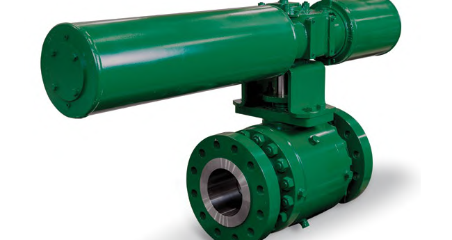

The Scotch-Yoke Piston Actuator

- A piston-actuator variant that converts linear piston motion into a valve shaft's rotary motion through a yoke mechanism — built on the same high-pressure-air, double-acting-or-spring-return piston base already shown, adapted for rotary rather than sliding-stem valves.
After Control Valve Handbook, 6th ed., Fig. 3.47 — used directly. Component Index: cvh-cmp-scotch-yoke-piston-actuator.